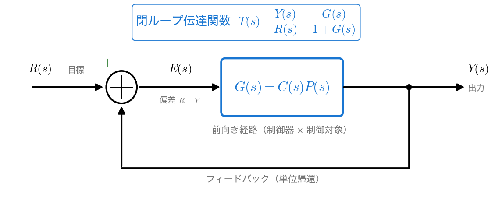
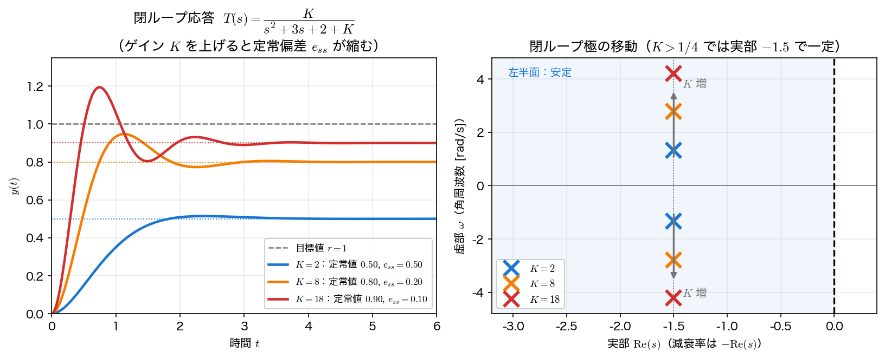

フィードバック制御
前ページでは、特性方程式 \(s^3+3s^2+2s+K=0\) の安定範囲を調べた。この特性方程式はどこから来たのか。本ページでは、それを生み出す フィードバック制御 の構造を導入し、ゲインで極を動かして 定常偏差 と 過渡応答 を設計する見方を扱う。最終値定理（第7回）が、ここで定常偏差を読む道具として効いてくる。
フィードバックの構造
制御の基本は、出力 \(y\) を測って目標 \(r\) と比べ、その 偏差 \(e=r-y\) を使って制御対象を駆動することである。これを s 領域のブロック線図で描くと次のようになる。

ここで \(G(s)\) は 前向き伝達関数、すなわち偏差 \(E\) から出力 \(Y\) までの経路をまとめたものである。実際には制御器 \(C(s)\) と制御対象 \(P(s)\) が直列につながっていて \(G(s)=C(s)P(s)\) だが、閉ループの構造を見るだけならこの積を 1 つのブロックにまとめてよい。以下ではこの \(G\) を使って話を進める。
図の関係を式にすると、\(Y(s)=G(s)E(s)\) かつ \(E(s)=R(s)-Y(s)\) だから、\(Y=G(R-Y)\) を \(Y\) について解いて
を得る。これが 閉ループ伝達関数 である。分母を \(0\) とおいた
の根が閉ループの極であり、これが前ページのラウス・フルビッツ判別の対象だった。\(G(s)=\dfrac{K}{s(s+1)(s+2)}\) を入れれば \(1+G=0 \Rightarrow s^3+3s^2+2s+K=0\) となり、確かに前ページの式が出てくる。
開ループと閉ループ
\(G(s)\) 単体（フィードバックを切った状態）を 開ループ伝達関数、\(T(s)=G/(1+G)\) を 閉ループ伝達関数 と呼ぶ。フィードバックをかけると、極は \(G\) の極（開ループ極）ではなく \(1+G=0\) の根（閉ループ極）に移る。フィードバックの本質は、ゲインを通じて閉ループ極を動かし、望ましい応答に近づけられること にある。
ただし「望む位置へ自由に置ける」わけではない。ゲイン \(K\) ひとつを動かして得られる閉ループ極は、\(K\) を \(0\to\infty\) と変えたときに極が描く曲線（根軌跡）の上だけを動く。s 平面の任意の点へ移すには、\(C(s)\) に極や零点を足す（PID や進み・遅れ補償）など、動かせるパラメータを増やす必要がある。
比例制御と極の移動
最も単純な制御は、偏差 \(e\) に比例した操作を加える 比例制御（P 制御） で、ゲイン \(K\) がその比例係数にあたる。すなわち制御器を \(C(s)=K\)（定数）、制御対象を \(P(s)=\dfrac{1}{(s+1)(s+2)}\) とすると、前向き伝達関数は
となる。この \(K\) を変えたときの閉ループ応答を見る。閉ループ伝達関数は
である。これを第7回の 2 次系 \(\dfrac{\omega_n^2}{s^2+2\zeta\omega_n s+\omega_n^2}\) と比べたいが、そのままでは分子が \(\omega_n^2\) になっていない。DC 利得を括り出して
と書けば、右側が標準形の 2 次系である（分子が \(\omega_n^2=2+K\) で分母定数項と一致し、この因子の DC 利得は \(1\)）。分母は標準形と同じだが、DC 利得は \(1\) ではなく \(T(0)=K/(2+K)\) であり、この「\(1\) に届かない分」が後で扱う定常偏差になる。分母の係数を比べると
なので、\(K\) を上げると \(\omega_n\) が増えて \(\zeta\) が減る。\(\zeta<1\) すなわち \(K>\dfrac14\) の範囲では極が複素共役対 \(s=-\zeta\omega_n\pm j\omega_n\sqrt{1-\zeta^2}\) になり、実部は \(-\zeta\omega_n=-\dfrac{3}{2}\) で 一定 のまま、虚部だけが \(K\) とともに増える（極が虚軸と平行に上下へ離れていく）。実部が一定なので 整定時間（\(\approx 4/\zeta\omega_n\)）はほとんど変わらない。一方で \(\omega_n\) が上がるぶん 立ち上がりは速くなり、\(\zeta\) が下がるぶん オーバーシュート・振動は増える ── ゲインを上げたときの「速くなる」とはこの立ち上がりの速さを指す。
実部が \(-1.5\) 一定になるのは \(K>1/4\) のとき
「実部一定」は 2 つの極が複素共役対のときの話である。\(0<K<\dfrac14\) では判別式 \(9-4(2+K)=1-4K\) が正で、極は 2 つの実極 になる。たとえば \(K=0.1\) の極は \(-1.887\) と \(-1.113\) で、どちらも \(-1.5\) ではない（和が \(-3\)、すなわち 平均 が \(-1.5\) になっているだけ）。\(K\) を \(0\) から上げていくと 2 つの実極は互いに近づき、\(K=\dfrac14\) で重根 \(-1.5\) に合流し、そこから先が複素対として上下へ離れていく。以下で扱う \(K=2,8,18\) はすべて \(K>\dfrac14\) の側にある。
最終値定理による定常偏差
制御のもう一つの関心事は、\(t\to\infty\) で出力が目標 \(r\) にどれだけ近づくか、すなわち 定常偏差
である。目標を単位ステップ \(r(t)=u(t)\)（\(R(s)=1/s\)）とすると、偏差は \(E(s)=R-Y=(1-T(s))R(s)\) なので、最終値定理（第7回）より
逆変換せずに、閉ループの DC 利得 \(T(0)\) だけで定常偏差が読める。\(T(0)=\dfrac{K}{2+K}\) だから
となり、ゲイン \(K\) を上げるほど定常偏差は小さくなる（\(K\to\infty\) で \(e_{ss}\to0\)）。これは開ループの DC 利得 \(K_p=G(0)=K/2\)（位置誤差定数）を使った \(e_{ss}=\dfrac{1}{1+K_p}\) とも一致する。scipy.signal で閉ループ応答を計算して確かめる。
import numpy as np
import scipy.signal as ss
for K in (2, 8, 18):
T = ss.TransferFunction([K], [1, 3, 2 + K]) # 閉ループ T=G/(1+G)
t = np.linspace(0, 12, 5000)
_, y = ss.step(T, T=t)
ess = 2 / (2 + K)
poles = np.roots([1, 3, 2 + K])
print(f"K={K:2d}: T(0)={K/(2+K):.3f} y(inf)={y[-1]:.3f} "
f"e_ss={ess:.3f} zeta={3/(2*(2+K)**0.5):.3f} 極={np.round(poles, 3)}")
K= 2: T(0)=0.500 y(inf)=0.500 e_ss=0.500 zeta=0.750 極=[-1.5+1.323j -1.5-1.323j]
K= 8: T(0)=0.800 y(inf)=0.800 e_ss=0.200 zeta=0.474 極=[-1.5+2.784j -1.5-2.784j]
K=18: T(0)=0.900 y(inf)=0.900 e_ss=0.100 zeta=0.335 極=[-1.5+4.213j -1.5-4.213j]
数値計算した定常値 y(inf) は予測した \(T(0)=\dfrac{K}{2+K}\) にぴたりと一致し、定常偏差は \(K=2,8,18\) で \(0.5,0.2,0.1\) と縮んでいく。一方で減衰比 \(\zeta\) は \(0.75\to0.474\to0.335\) と下がり、極の実部は \(-1.5\) のまま虚部だけが \(1.323\to2.784\to4.213\) と上がっている。

ゲインのトレードオフ
比例ゲイン \(K\) を上げると、定常偏差は減る（精度が上がる）が、減衰比 \(\zeta\) が下がってオーバーシュート・振動が増える（過渡が悪化する）。
なお、いまの 2 次系 \(s^2+3s+2+K\) は \(K>0\) ならつねに係数がすべて正で、どれだけ \(K\) を上げても不安定にはならない（極は虚軸に近づかず、実部 \(-1.5\) の直線上を離れていくだけ）。不安定化が起きるのは、前ページの 3 次系 \(s^3+3s^2+2s+K\) のように 極が 3 つ以上ある、あるいは積分器やむだ時間で位相が余分に遅れる場合である。そこでは \(K>6\) で極が右半面に出て発散した。
「定常精度」と「過渡の収まり」と「安定性」を同時に満たすゲイン選び、あるいは比例制御だけでは届かないとき積分・微分動作を足す（PID 制御）のが、制御設計の出発点である。
まとめ
- フィードバックは偏差 \(E=R-Y\) で前向き伝達関数 \(G(s)=C(s)P(s)\) を駆動する構造で、閉ループ伝達関数 は \(T(s)=\dfrac{G(s)}{1+G(s)}\)、特性方程式 は \(1+G(s)=0\)。
- 比例ゲイン \(K\) を上げると、\(G=K/((s+1)(s+2))\) の閉ループ極は（\(K>1/4\) なら）実部 \(-1.5\) 一定のまま虚部が増え、\(\omega_n\) が増えて \(\zeta\) が減る（立ち上がりは速いが振動的）。
- ステップ目標への 定常偏差 は最終値定理から \(e_{ss}=1-T(0)=\dfrac{2}{2+K}\)。ゲインを上げるほど縮むが、過渡は振動的になる ── これがゲイン設計のトレードオフ。さらに前ページの 3 次系のように極が多い系では、上げすぎれば不安定化まで起きる。
本講義との接続
第6〜8回で、ラプラス変換は「システムを記述し（伝達関数）、応答を読み（極・最終値定理）、安定性を判定し（ラウス・フルビッツ）、フィードバックで設計する」までの一連の道具になった。安定性の鍵はつねに 特性方程式の根（極）の位置 だった。第11回「線形安定性」 では、同じ「安定性」を s 領域の伝達関数ではなく、状態空間表現の係数行列の固有値、さらに非線形系の 不動点まわりの線形化 という別の視点からとらえ直す。今回の「特性方程式の根 ＝ 極」が、その固有値の見方への橋渡しになる。